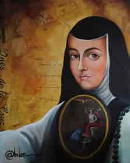
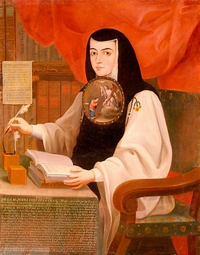
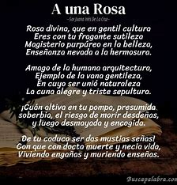

PRIMERA OBRA
Inundación Castálida
El primer libro publicado por Sor Juana Inés de la Cruz fue Inundación Castálida, que reunió una buena parte de su obra poética y fue publicada en Madrid, antes que en la Nueva España.
.jpg)
.jpg)
Escritora mexicana, la mayor figura de las letras hispanoamericanas del siglo XVII.

Niña prodigio, aprendió a leer y escribir a los tres años, y a los ocho escribió su primera loa. En 1659 se trasladó con su familia a la capital mexicana. Admirada por su talento y precocidad, a los catorce fue dama de honor de Leonor Carreto, esposa del virrey Antonio Sebastián de Toledo. Apadrinada por los marqueses de Mancera, brilló en la corte virreinal de Nueva España por su erudición, su viva inteligencia y su habilidad versificadora. Murió mientras ayudaba a sus compañeras enfermas durante la epidemia de cólera que asoló México en el año 1695. La poesía del Barroco alcanzó con ella su momento culminante, y al mismo tiempo introdujo elementos analíticos y reflexivos que anticipaban a los poetas de la Ilustración del siglo XVIII. Sus obras completas se publicaron en España en tres volúmenes: Inundación castálida de la única poetisa, musa décima, Sor Juana Inés de la Cruz (1689), Segundo volumen de las obras de Sor Juana Inés de la Cruz (1692) y Fama y obras póstumas del Fénix de México (1700), con una biografía del jesuita P. Calleja.
Entre las que destacan las de tema amoroso, como los sonetos que comienzan con "Esta tarde, mi bien, cuando te hablaba" y "Detente, sombra de mi bien esquivo". En "Rosa divina que en gentil cultura" desarrolla el mismo motivo de dos célebres sonetos de Góngora y de Calderón, no quedando inferior a ninguno de ambos.

Inundación Castálida
El primer libro publicado por Sor Juana Inés de la Cruz fue Inundación Castálida, que reunió una buena parte de su obra poética y fue publicada en Madrid, antes que en la Nueva España.
| visitar sitio web | Visitar sitio web |